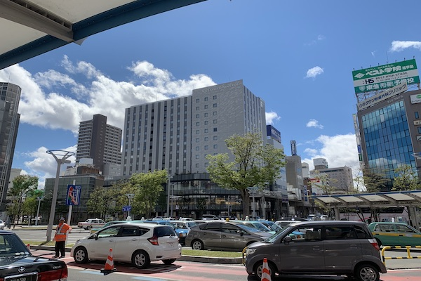
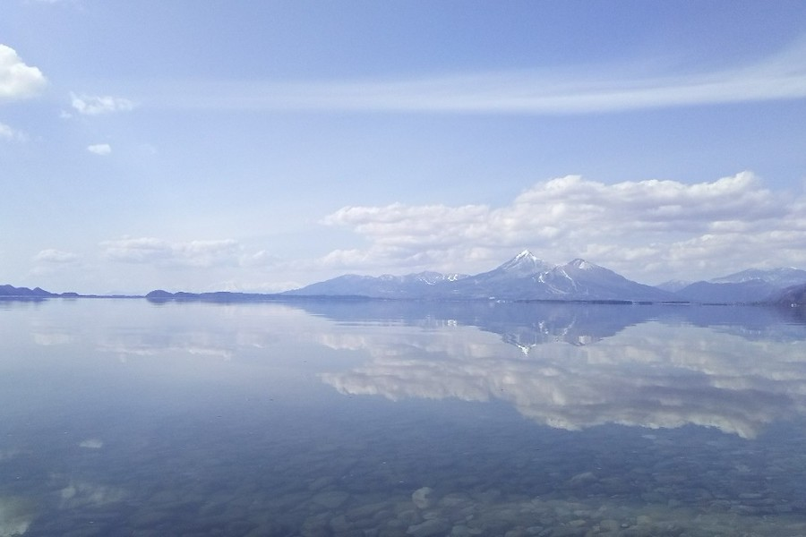

NAKADORI DISTRICT
OVERVIEW
Nakadōri (中通り, Nakadōri) is a region comprising the middle third of Fukushima Prefecture, Japan. It is sandwiched between the regions of Aizu to the west and Hamadōri to the east.
The principal cities of the area are Kōriyama and the prefecture's capital, Fukushima. The economic principal city is Koriyama, and the political principal city is Fukushima. Sometimes these cities look hostile to each other... I was born in Koriyama, so I love Koriyama!lol
DESTINATION
KORIYAMA
Kōriyama (郡山市, Kōriyama-shi) is a city in Fukushima Prefecture, Japan. As of 1 January 2020, the city has an estimated population of 322,996 people in 141760 households, and a population density of 430 persons per km². The total area of the city is 757.20 square kilometres (292.36 sq mi). Kōriyama is designated as a core city and functions as a commercial center for Fukushima Prefecture. Kōriyama is the second largest conurbation in the Tōhoku region.
Kōriyama is an important transportation hub, as it is located in the center of Fukushima Prefecture and is the nexus of several railway lines and expressways. Kōriyama Station is the central station for the city. However, Kōriyama does not have an airport.
INAWASHIRO
Inawashiro (猪苗代町, Inawashiro-machi) is a town located in Fukushima Prefecture, Japan. As of 1 March 2020, the town had an estimated population of 13,810 in 5309 households, and a population density of 35 persons per km². The total area of the town was 394.85 square kilometres (152.45 sq mi). It is noted as the birthplace of the famous doctor Hideyo Noguchi, who contributed to knowledge in the fight against syphilis and yellow fever.
You can see a lot of beautiful nature in this area. If you are tired of life in urban area, you should come here and breath in the air of nature.